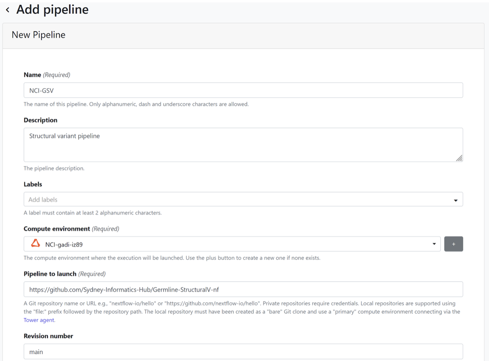
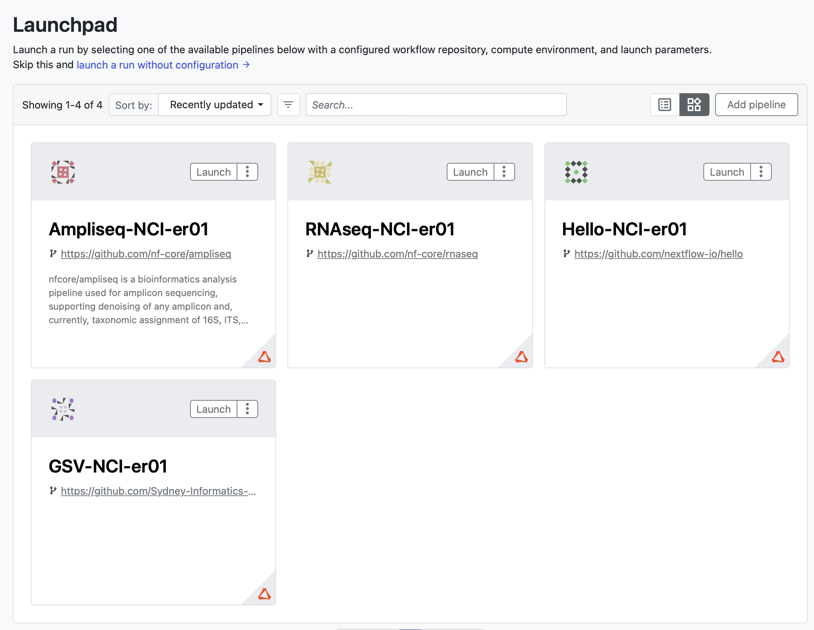

Adding pipelines
Only admins can add pipelines to the launchpad for all workspace members to run. Below are some examples for how to set up Nextflow and nf-core pipelines. This documentation is currently under development, more details will be added regarding pipeline-specific configuration and development required for a workflow’s parameters to be visible to the Tower interface.
Example 1: Hello World
A simple script showing the Nextflow Hello World! pipeline. 
- From the Launchpad, select “Add pipeline”.
- Give your pipeline a descriptive name. It needs to be unique to your community (can’t create one that already exists in broader BioCommons group).
- Select your previously configured compute environment.
- Provide pipeline codebase URL https://github.com/nextflow-io/hello.
- Select main for the Revision number.
- Specify $TW_AGENT_WORK for the work directory.
- Select “Add”.
Example 2: nf-core/rnaseq
nf-core is a community effort to collect a curated set of analysis pipelines built using Nextflow. It has three target audiences: facilities, single users, and developers. For facilities, it provides highly automated and optimised pipelines that guarantee reproducibility of results for their users. Single users profit from portable, documented, and easy-to-use workflows. However, you can also become a developer and write your own pipelines in Nextflow using ready-made templates and helper tools. Currently, there are 86 pipelines available.
nf-core/rnaseq is a bioinformatics pipeline that can be used to analyse RNA sequencing data obtained from organisms with a reference genome and annotation. It takes a samplesheet and FASTQ files as input, performs quality control (QC), trimming and (pseudo-)alignment, and produces a gene expression matrix and extensive QC report.

- From the Launchpad, select “Add pipeline”.
- Give your pipeline a descriptive name. It needs to be unique to your community (can’t create one that already exists in broader BioCommons group).
- Select your previously configured compute environment.
- Provide pipeline codebase URL https://github.com/nf-core/rnaseq.
- Select Master for the Revision number.
- Specify $TW_AGENT_WORK for the work directory.
- Select either gadi or setonix for the config profiles (these are provided in the code base of the workflow).
- Select “Add”.
Example 3: Germline-StructuralV
GermlineStructuralV-nf is a pipeline for identifying structural variant events in human Illumina short read whole genome sequence data. GermlineStructuralV-nf identifies structural variant and copy number events from BAM files using Manta, Smoove, and TIDDIT. Variants are then merged using SURVIVOR, and annotated by AnnotSV. The pipeline is written in Nextflow and uses Singularity/Docker to run containerised tools.

- From the Launchpad, select “Add pipeline”.
- Give your pipeline a descriptive name. It needs to be unique to your community (can’t create one that already exists in broader BioCommons group).
- Select your previously configured compute environment.
- Provide pipeline codebase URL https://github.com/Sydney-Informatics-Hub/Germline-StructuralV-nf.
- Select main for the Revision number.
- Specify $TW_AGENT_WORK for the work directory.
- Select either gadi or setonix for the config profiles (these are provided in the code base of the workflow).
- Select “Add”. 
Configured Launchpad
Your launchpad will now reload with a preconfigured workflows.
